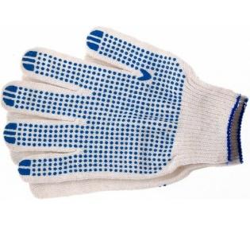
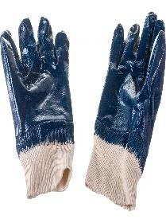
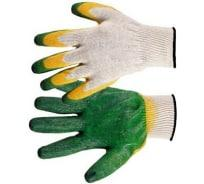
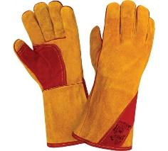
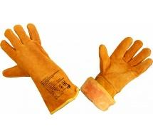

Товары
-

Перчатки трикотажные №1
Вид защиты: от механических воздействий. ПВХ покрытие. Рисунок-точка. Для защиты от различных производственных загрязнений при проведении ремонтных работ.
Манжета: длинная, с резинкой и ручным оверлоком.
Купить -

Перчатки трикотажные №2 ГОСТ 12.4.252
Вид защиты: от механических воздействий. Для защиты от различных производственных загрязнений при проведении ремонтных работ.
Материал: джерси, нитрил. Размер: XXL
Купить -

Перчатки трикотажные №3
Вид защиты: от механических воздействий. Тип манжеты: длинная, с резинкой и ручным оверлоком. Для защиты от различных производственных загрязнений при проведении ремонтных работ.
Двойное латексное покрытие (облив) ладонной части и пальцев. Размер: L
Купить -

Перчатки швейные (краги сварщика) № 1
Вид защиты: от повышенных температур. Класс защиты: 3
Для выполнения работ, при которых расстояние от работающего до источника искр и брызг расплавленного металла менее 0,5 м.
Материал: спилок. Без утепления
Купить -

Перчатки швейные (краги сварщика) № 2
Вид защиты: от повышенных температур. Класс защиты: 3
Для выполнения работ, при которых расстояние от работающего до источника искр и брызг расплавленного металла менее 0,5 м.
Материал: спилок. Утепленные
Купить